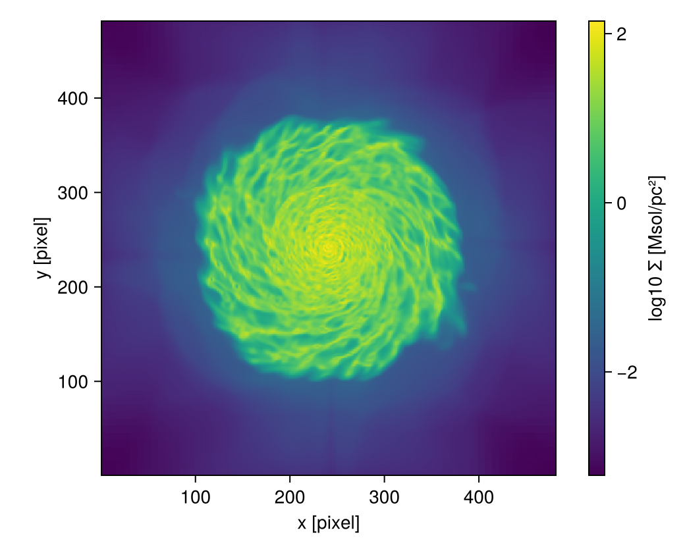

Sharing results: sidecars
This page is also an executable Jupyter notebook: open / download export_sidecars.ipynb. The notebooks run end-to-end and double as part of Mera's test suite.
A year after a paper, someone asks which snapshot, which units and which Mera version produced Figure 3. Every file Mera writes for you answers that by itself: next to it sits a sidecar, a small readable <file>.meta.json with what the file holds, where its data came from and what ran. This page shows the sidecar and how to read it back, how to give a figure one, and how to turn a whole folder into one record for publishing. Exporting Data covers the file formats themselves.
Mera keeps one record of where a result came from, at three levels:
| level | the record | page |
|---|---|---|
| one object | provenance(gas), carried in memory by every Mera result | Provenance |
| one file | a sidecar, <file>.meta.json, next to every file Mera saves | Sharing Results & Sidecars |
| one folder | bundle("."), one record of a whole analysis, for publishing | Sharing Results & Sidecars |
Reproducible work needs more than the final figure. Guidelines for FAIR simulation data (Findable, Accessible, Interoperable, Reusable) ask for the data behind each figure, its provenance, and the environment that ran, in formats any tool can read (Pfalzner et al. 2026). The sidecar records that without extra work, every time you save.
Start each analysis in its own folder: meraproject("galaxy_paper") makes it, then start Julia there with julia --project=. (the first time: ] instantiate). The folder keeps its own list of package versions, so the sidecars can record exactly what ran. Then:
exportdata(m, "fig3.h5") # 1. saves write their sidecar by themselves
save("fig3.png", fig); writesidecar("fig3.png", m) # 2. a figure: one more line
readsidecar("fig3.png") # 3. where a file came from
sidecaroverview(".") # 4. all files of the analysis
bundle("."; simulation=info) # 5. before publishing: one record, and the BibTeXNothing else has to be switched on. If you skip the first step, Mera reminds you once.
# Example-data root. Point this at your own simulation folder, or set the
# MERA_EXAMPLES environment variable; every path below is built from it.
MERA_EXAMPLES = get(ENV, "MERA_EXAMPLES", "/Volumes/FASTStorage/Simulations/Mera-Tests");
using Mera
info = getinfo(300, joinpath(MERA_EXAMPLES, "RAMSES/mw_L10"), verbose=false)
gas = gethydro(info, verbose=false, show_progress=false);
# All files of this page go to a fresh folder, and the page works inside it.
# In your own work this is a folder next to your script, e.g. "results/".
cd(mktempdir())
# A map and two exported files to work with; Exporting Data explains the formats.
m = projection(gas, [:sd, :T], [:Msol_pc2, :K]; pxsize=[100., :pc],
verbose=false, show_progress=false)
exportdata(m, "fig3_maps.h5"; length_unit=:kpc,
note="Figure 3: gas surface density and temperature")
exportdata(m, "fig3_maps.csv"; length_unit=:kpc, verbose=false)*__ __ _______ ______ _______
| |_| | | _ | | _ |
| | ___| | || | |_| |
| | |___| |_||_| |
| | ___| __ | |
| ||_|| | |___| | | | _ |
|_| |_|_______|___| |_|__| |__|
Mera v1.9.0 | Julia 1.12.7 | 4 threads
[Mera] Hint: fig3_maps.h5.meta.json records where fig3_maps.h5 came from.
readsidecar("fig3_maps.h5") shows it; sidecar(false) stops writing them.
(shown once per session; verbose(false) silences Mera's messages)
exportdata: T, sd → fig3_maps.h5 (+ fig3_maps.h5.meta.json)"fig3_maps.csv"The sidecar
readsidecar prints what a sidecar says. It also checks that the data file still matches the SHA-256 recorded when it was written.
A SHA-256 is a fingerprint of a file: 64 characters computed from every byte of it. Change a single byte and the fingerprint is completely different, and two different files practically never share one. So when a file's SHA-256 matches the one in its sidecar, it is the file that was written. It says nothing about whether the content is right, only that it is unchanged. Outside Julia, shasum -a 256 fig3_maps.h5 (macOS) or sha256sum fig3_maps.h5 (Linux) computes the same fingerprint.
r = readsidecar("fig3_maps.h5")Sidecar of fig3_maps.h5 (hdf5, projection) data file: unchanged
written 2026-10-25 11:54 UTC by Mera 1.9.0; Julia 1.12.7, 4 threads
source Mera v1.9.0 | mw_L10/output_00300 | 445.89 Myr | L=48.0 ndim=3 lmin=6 lmax=10 | ScalesType003
simulation /Volumes/FASTStorage/Simulations/Mera-Tests/RAMSES/mw_L10
input files namelist.txt, makefile.txt, patches.txt (SHA-256 recorded)
environment /Volumes/FASTStorage/Simulations/Notebooks/Mera-Docs/version_1.1: Project.toml and Manifest.toml (SHA-256 recorded), 23 packages
contents x [kpc] 481
y [kpc] 481
T [K] 481×481
sd [Msol_pc2] 481×481
note Figure 3: gas surface density and temperature
sidecar fig3_maps.h5.meta.jsonThe line written names the Mera build that wrote the file, and the environment part of the sidecar stores how Mera was installed: the registered release, a branch from GitHub, or a local checkout, and whether the code is exactly the registered release. It says "not a registered release" here because this page is built from a development checkout of Mera; Which build ran explains the cases.
The sidecar is plain JSON, with these parts:
| part | holds |
|---|---|
file | name, size and SHA-256 of the data file |
result | what the file holds: arrays, shapes, units, the map geometry, and the format's layout |
source | the provenance of the snapshot |
input_files | SHA-256 of the run's namelist.txt, makefile.txt, patches.txt, compilation.txt |
analysis | the Julia environment of your analysis and the script that ran (see below) |
environment | Julia and Mera version, how Mera was installed, OS, CPU model, thread counts |
note | your text |
Each part can be read directly:
println("output : ", r["source"]["output"])
println("time : ", round(r["source"]["time_myr"], sigdigits=5), " Myr")
println("sd unit : ", r["result"]["arrays"]["sd"]["unit"])
println("map extent : ", round.(Float64.(r["result"]["attributes"]["extent"]), sigdigits=6), " ",
r["result"]["attributes"]["length_unit"])
println("namelist : ", r["input_files"]["namelist.txt"]["sha256"])
println("julia : ", r["environment"]["julia_version"], ", ", r["environment"]["julia_threads"], " threads")output : 300
time : 445.89 Myr
sd unit : Msol_pc2
map extent : [0.0, 48.0, 0.0, 48.0] kpc
namelist : 925c69c26386ef7814b955f77160dc82cf0004de114c8165b5b36290915b3c75
julia : 1.12.7, 4 threadsWhat is not recorded. The host name of the machine is left out on purpose. The simulation path is kept in full, because it is what traces the data; anonymize=true keeps only its last two parts, for a sidecar you publish:
exportdata(m, "fig3_public.h5"; length_unit=:kpc, anonymize=true)
readsidecar("fig3_public.h5")["source"]["simulation_path"]exportdata: T, sd → fig3_public.h5 (+ fig3_public.h5.meta.json)".../RAMSES/mw_L10"Mera files and maps get sidecars too
savedata, savemap, savemovie and save_clumps write a sidecar as well. For a Mera file it lists every data type in the file; an :append adds to the list. Here a small sphere around the centre keeps the file small.
core = subregion(gas, :sphere; radius=3., center=[:bc], range_unit=:kpc, verbose=false)
savedata(core, :write; path=".", verbose=false)
savemap(m, "fig3_maps.jld2"; verbose=false)
readsidecar("output_00300.jld2")Sidecar of output_00300.jld2 (jld2, mera_file) data file: unchanged
written 2026-10-25 11:55 UTC by Mera 1.9.0; Julia 1.12.7, 4 threads
source Mera v1.9.0 | mw_L10/output_00300 | 445.89 Myr | L=48.0 ndim=3 lmin=6 lmax=10 | ScalesType003
simulation /Volumes/FASTStorage/Simulations/Mera-Tests/RAMSES/mw_L10
input files namelist.txt, makefile.txt, patches.txt (SHA-256 recorded)
environment /Volumes/FASTStorage/Simulations/Notebooks/Mera-Docs/version_1.1: Project.toml and Manifest.toml (SHA-256 recorded), 23 packages
contents hydro: 1136840 rows, 11 columns
sidecar output_00300.jld2.meta.jsonFigures
A figure is saved by the plotting package, so Mera does not see it. One more line, writesidecar, gives it the same record, taken from the result it shows:
using CairoMakie
fig = Figure(size=(520, 420))
ax = Axis(fig[1, 1]; aspect=DataAspect(), xlabel="x [pixel]", ylabel="y [pixel]")
hm = heatmap!(ax, log10.(m.maps[:sd]))
Colorbar(fig[1, 2], hm; label="log10 Σ [Msol/pc²]")
save("fig3.png", fig)
writesidecar("fig3.png", m; note="Figure 3");
figSidecar written → fig3.png.meta.json
For a figure with several panels, pass all its results, writesidecar("fig4.pdf", [m1, m2, m3]); the sidecar then lists the snapshot of each panel. Read back, it shows what the figure was made from:
readsidecar("fig3.png")Sidecar of fig3.png (png, figure) data file: unchanged
written 2026-10-25 11:55 UTC by Mera 1.9.0; Julia 1.12.7, 4 threads
source Mera v1.9.0 | mw_L10/output_00300 | 445.89 Myr | L=48.0 ndim=3 lmin=6 lmax=10 | ScalesType003
simulation /Volumes/FASTStorage/Simulations/Mera-Tests/RAMSES/mw_L10
input files namelist.txt, makefile.txt, patches.txt (SHA-256 recorded)
environment /Volumes/FASTStorage/Simulations/Notebooks/Mera-Docs/version_1.1: Project.toml and Manifest.toml (SHA-256 recorded), 23 packages
contents x [standard] 481
y [standard] 481
T [K] 481×481
sd [Msol_pc2] 481×481
note Figure 3
sidecar fig3.png.meta.jsonAn overview of a folder
sidecaroverview lists every sidecar in a folder: what each file holds, the snapshot, and when it was written.
recs = sidecaroverview(".");6 sidecars in .
file kind format snapshot time written (UTC) data file
----------------- ---------- ------ ------------------- --------- ---------------- ---------
fig3.png figure png mw_L10/output_00300 445.9 Myr 2026-10-25 11:55 present
fig3_maps.csv projection csv mw_L10/output_00300 445.9 Myr 2026-10-25 11:54 present
fig3_maps.h5 projection hdf5 mw_L10/output_00300 445.9 Myr 2026-10-25 11:54 present
fig3_maps.jld2 projection jld2 mw_L10/output_00300 445.9 Myr 2026-10-25 11:55 present
fig3_public.h5 projection hdf5 mw_L10/output_00300 445.9 Myr 2026-10-25 11:54 present
output_00300.jld2 mera_file jld2 mw_L10/output_00300 445.9 Myr 2026-10-25 11:55 presentHas a file changed?
The recorded SHA-256 notices a file that was edited or replaced after it was written. Here one line is added to the CSV, as a spreadsheet program might do on saving:
open("fig3_maps.csv", "a") do io
println(io, "0,0,0,0")
end
readsidecar("fig3_maps.csv").status:changedsidecaroverview(dir; verify=true) checks every file of a folder. It is off by default, since hashing large Mera files takes a few seconds per GB.
recs = sidecaroverview("."; verify=true, verbose=false)
[basename(x.file) => x.status for x in recs]6-element Vector{Pair{String, Symbol}}:
"fig3.png" => :unchanged
"fig3_maps.csv" => :changed
"fig3_maps.h5" => :unchanged
"fig3_maps.jld2" => :unchanged
"fig3_public.h5" => :unchanged
"output_00300.jld2" => :unchangedDescribing the simulation
A sidecar describes a result. simulationrecord describes the simulation behind it: the code, box and resolution, units, cosmology, which physics was on, what the outputs hold, and the SHA-256 of the run's input files. For RAMSES the physics comes from the namelist, with the Fortran values cleaned up (comments removed, .true. and numbers parsed).
rec = simulationrecord(info)Simulation record of mw_L10 (RAMSES), output 300
box 48 kpc (48 in code units), 3-D
resolution levels 6..10, finest cell 46.875 pc
time 445.89 Myr
physics hydro (hllc), gravity, particles, cooling, star formation, feedback
contents hydro, gravity, particles
input files namelist.txt, makefile.txt, patches.txt (SHA-256 recorded)rec["physics"]["summary"]["star_formation"]OrderedCollections.OrderedDict{String, Any} with 4 entries:
"T2_star" => 0
"eps_star" => 0.01
"m_star" => 1
"n_star" => 10.0Given the simulation folder instead, the record also lists every output with its time and size on disk, and the outputs at which the namelist changed, for a run restarted with new settings:
run = simulationrecord(joinpath(MERA_EXAMPLES, "RAMSES/mw_L10"))simulationrecord: 1 output of mw_L10Simulation record of mw_L10 (RAMSES), output 300
box 48 kpc (48 in code units), 3-D
resolution levels 6..10, finest cell 46.875 pc
time 445.89 Myr
physics hydro (hllc), gravity, particles, cooling, star formation, feedback
contents hydro, gravity, particles
run 1 outputs (300..300), 445.89..445.89 Myr, 5.682 GB
input files namelist.txt, makefile.txt, patches.txt (SHA-256 recorded)for o in run["run"]["output_list"]
println("output ", o["output"], " ", round(o["time_myr"], sigdigits=5), " Myr ",
round(o["bytes"] / 1e9, sigdigits=3), " GB")
endoutput 300 445.89 Myr 6.1 GBTo publish the simulation itself, datacite turns the record into DataCite metadata, the format data repositories and DOI registration use. Mera fills in what it knows: the technical description, sizes, formats, the creation date, and the RAMSES paper as related work. You supply who made it, a title and a license, as keywords or in a simulation.toml next to the simulation, so they are written once per run.
meta = datacite(run; creators=["Behrendt, Manuel"], title="Isolated Milky-Way-like disc galaxy",
license="CC-BY-4.0", keywords=["galaxy", "interstellar medium"],
file="datacite.json")
print(read("datacite.json", String)){
"schemaVersion": "http://datacite.org/schema/kernel-4",
"types": {
"resourceTypeGeneral": "Dataset",
"resourceType": "Simulation output"
},
"titles": [
{
"title": "Isolated Milky-Way-like disc galaxy"
}
],
"creators": [
{
"name": "Behrendt, Manuel",
"nameType": "Personal",
"familyName": "Behrendt",
"givenName": "Manuel"
}
],
"publisher": {
"name": "Zenodo"
},
"publicationYear": "2026",
"subjects": [
{
"subject": "galaxy"
},
{
"subject": "interstellar medium"
},
{
"subject": "numerical simulation"
},
{
"subject": "RAMSES"
}
],
"dates": [
{
"date": "2025-06-21",
"dateType": "Created"
}
],
"language": "en",
"descriptions": [
{
"description": "RAMSES simulation, 3-D; box 48 kpc; AMR levels 6 to 10 (finest cell 46.875 pc); physics: hydro (hllc), gravity, particles, cooling, star formation, feedback; 1 output at 445.89 Myr. Described with Mera 1.9.0 (simulationrecord).",
"descriptionType": "TechnicalInfo"
}
],
"sizes": [
"1 output",
"5.682 GB"
],
"formats": [
"RAMSES output files"
],
"rightsList": [
{
"rights": "CC-BY-4.0",
"rightsIdentifier": "CC-BY-4.0",
"rightsIdentifierScheme": "SPDX",
"schemeUri": "https://spdx.org/licenses/"
}
],
"relatedIdentifiers": [
{
"relatedIdentifier": "10.1051/0004-6361:20011817",
"relatedIdentifierType": "DOI",
"relationType": "References",
"resourceTypeGeneral": "JournalArticle"
}
]
}What to cite
citation gives the BibTeX for Mera at the exact version that runs, and the papers of the code behind the data. For RAMSES that is the code paper, plus the MHD and RT papers when the run used them. On a saved file it takes the Mera version recorded in the sidecar.
citation(gas)@software{Mera_1_9_0,
author = {Behrendt, Manuel},
title = {Mera.jl: Fast, conservation-correct, code-agnostic analysis of astrophysical simulations in Julia},
version = {1.9.0},
year = {2026},
doi = {10.5281/zenodo.3675254},
url = {https://github.com/ManuelBehrendt/Mera.jl}
}
@article{Teyssier2002,
author = {Teyssier, Romain},
title = {Cosmological hydrodynamics with adaptive mesh refinement. A new high resolution code called RAMSES},
journal = {Astronomy and Astrophysics},
volume = {385},
pages = {337--364},
year = {2002},
doi = {10.1051/0004-6361:20011817}
}
citation("fig3.png"; file="software.bib");One record for the whole folder
Before the folder is published, bundle joins all its sidecars into one record, ro-crate-metadata.json. It is an RO-Crate, a standard format for describing research data: every file with its size and SHA-256, and for each file Mera wrote, what made it (the Mera version, the script and the snapshot). It also writes software.bib from citation and, with simulation=, the simulation record. Nothing is copied.
bundle("."; simulation=info, title="Sharing results example",
creators=["Behrendt, Manuel"], license="CC-BY-4.0")┌ Warning: These files changed after their sidecar was written: fig3_maps.csv. Write them again, or their recorded SHA-256 does not match.
└ @ Mera ~/code-github/Mera.jl/src/functions/export/bundle.jl:213
Bundle of .: 9 files, 6 with a sidecar, 1 snapshot, Mera 1.9.0
→ ./ro-crate-metadata.json"./ro-crate-metadata.json"The warning names the CSV that was edited above: bundle checks every file against the SHA-256 in its sidecar before it records it.
Authors, title and license can also live in an analysis.toml in the folder, so the call becomes bundle("."; simulation=info). meraproject writes one when it starts a new analysis folder. One entry of the record, the action that wrote the figure:
crate = Mera.JSON3.read(read("ro-crate-metadata.json", String))
Mera.JSON3.pretty(only(e for e in crate["@graph"] if e["@id"] == "#make-fig3.png")){
"@id": "#make-fig3.png",
"@type": "CreateAction",
"name": "Mera wrote fig3.png",
"instrument": [
{
"@id": "#mera-1.9.0"
}
],
"result": {
"@id": "fig3.png"
},
"object": [
{
"@id": "#snapshot-mw_L10_output_00300"
}
],
"endTime": "2026-10-25T11:55:21.163"
}Why sidecars are on by default, and how to switch them off
A record helps only if it exists when someone asks for it, often a year later. A feature that has to be switched on is mostly never switched on, so Mera writes the sidecar every time. It costs little:
- it is small, about 5 KB per file;
- it is quiet: the first sidecar of a session prints one short line saying what the new file is and how to stop it, and after that only
exportdatanames it, in its usual line; - it never breaks a save: if the sidecar cannot be written, you get a warning and the data file is still written.
There are good reasons to switch them off. On a cluster that limits the number of files, every saved file now counts twice. And the sidecar records the simulation path (never the host name); if that should not be public, anonymize=true keeps only its last two parts.
sidecar=false turns the sidecar off for one call. sidecar switches it for the whole session, like verbose: sidecar(false) at the top of a script for none, sidecar(nothing) to return to each call's own keyword. To switch them off without changing a script, set the environment variable MERA_SIDECAR=0, for example in a cluster job script: MERA_SIDECAR=0 julia analysis.jl. The frames that savemovie writes with save_frames get no sidecar; the movie itself does.
sidecar(false)
exportdata(m, "scratch.npz"; verbose=false)
println("sidecar written: ", isfile("scratch.npz.meta.json"))
sidecar(nothing);sidecar written: falseThe analysis around the result
A result also depends on the analysis that made it: your script, and the versions of every package it used. The analysis part of the sidecar records both.
- The environment. The SHA-256 of the active
Project.tomlandManifest.toml, and the version of each package in the project. With those two files, anyone can rebuild exactly the packages that ran (pkg> instantiate); the fingerprints show they have the right ones. - The script. Run as
julia analysis.jl, or in JupyterLab or Jupyter Notebook 7 (which tell the kernel the notebook's path), the sidecar names the script and stores its SHA-256. Withinclude_script=trueit also stores the full text, or the code cells of a notebook. That is off by default, since a script may hold private paths or notes.
for (name, version) in r["analysis"]["environment"]["packages"]
println(rpad(name, 16), version)
endArrayInterface 7.28.1
BenchmarkTools 1.8.0
CSVFiles 1.0.2
CairoMakie 0.15.13
CodecZlib 0.7.8
ColorSchemes 3.31.0
Conda 1.10.3
DelimitedFiles 1.9.1
FITSIO 0.17.5
FileIO 1.20.0
FortranFiles 0.6.2
GZip 0.7.1
HDF5 0.17.3
JLD 0.13.5
MAT 0.12.1
Mera 1.9.0 (path)
NPZ 0.4.3
PyCall 1.96.4
PyPlot 2.11.6
Revise 3.16.2
Serialization 1.11.0
StructArrays 0.4.2
TimerOutputs 0.5.29This page is executed by nbconvert, which does not tell the kernel which notebook it runs, so here the script is not recorded:
r["analysis"]["script"] === nothingtrueRun as a script, the same part reads like this:
"script": {
"kind": "script",
"name": "analysis.jl",
"path": "/home/me/projects/galaxy/analysis.jl",
"sha256": "3f9a…"
}What is still not recorded. Code typed into the REPL leaves no file behind, and VS Code notebooks do not pass their path on. And a function you wrote yourself, such as the reducer of a timeseries or an add_field kernel, appears only by name: the result does not keep the code that made it. In those cases the script or notebook is still the record, so keep it, and publish it next to the results.
Before you publish figure data:
- [ ] run the analysis as a script, or in JupyterLab, so the sidecars name it
- [ ] export each figure's data with
exportdata, with anotenaming the figure - [ ] give each figure file its sidecar with
writesidecar - [ ] check the folder with
sidecaroverview(dir; verify=true) - [ ] use
anonymize=trueif the simulation path should not be public - [ ] put the data files, their sidecars and the scripts or notebooks in one folder, run
bundleon it, and upload it, e.g. to Zenodo - [ ] describe the simulation with
simulationrecord, anddataciteif it is published too - [ ] cite the software with the BibTeX from
citation - [ ] commit the
Project.tomlandManifest.tomlof the analysis (see Reproducibility)
See also
- Provenance, the record in the
sourcepart of every sidecar - Exporting Data, the formats
exportdatawrites - Reproducibility, pinned environments and test simulations
- MERA files, Mera's own format for data objects
export_vtk, for ParaView and VisIt